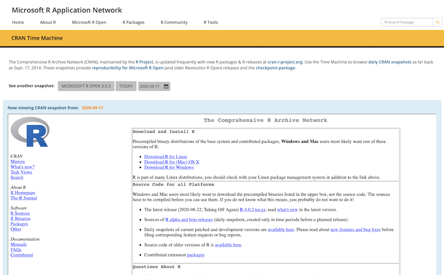

Reproducible Work in R

Source of Pain
- One of the biggest challenges we face as data-scientists while working on production-grade codebases is ensuring end-to-end reproduciblity and stability over time.
- This would extend to the academia as well, but I’m not an academician.
- A basic R setup has no built-in functionality to store the package versions & dependencies (unlike running within a conda environment, for example).
- If your default repository is CRAN, it’s a major problem since CRAN gets updated on a daily basis.
- I’ve found some solutions like
pkgdowntoo cumbersome to use. I’ve even tried working within a conda environment setup for R, but I am not a fan. - Collaborating in a team between data-scientists adds an additional layer of complexity. In my experience:
- Folks within one team can have different versions of everything - OS, the R kernel, packages, libraries, environment variables… !
- Some folks are conservative in upgrading their systems; others are excited to try newer versions of packages
- Working across OS can often introduce unexpected problems (IME, particularly with functions which allow parallel compute
mcapply,future.)- This becomes problematic when developing codebases on a local system (which might be Windows) but deploying codebases in another environment (which might be Linux)
Solution
In my experience, the solution I’ve outlined below offers me an excellent approach for long term reproducibility and code stability:
- Lock down your R package versions using MRAN snapshots
- Lock down your working environment using a Docker image
- Do all your development within Docker containers
- Accompany all projects with a Docker image
This has worked so well that I haven’t bothered using R/Rstudio on my local machine in well over half a year now.
1. MRAN Time Machine
Microsoft R Application Network (MRAN) offers a “time machine”. This service takes a daily snapshot of the CRAN repository repository - going as far back as Sep 2014. You can browse the snapshots on their page:

MRAN snapshots help us lock-down package versions using a date as the ‘index’. For example, running:
install.packages("lattice",
repos = "https://mran.microsoft.com/snapshot/2020-10-01")will install the version of {lattice} as of 1st Oct, 2020.
Now, this approach doesn’t make it easier to choose specific versions of packages released over time, but instead allows you to lock down a date and get only those versions available on the selected date. What that means is that running “Update Packages” on any date after 1st of Oct won’t change your package configuration.
> options(repos = "https://mran.microsoft.com/snapshot/2020-10-01")
> getOption("repos")
[1] "https://mran.microsoft.com/snapshot/2020-10-01"2. Docker Image
The Dockerfile
The Dockerfile holds the definition of how a docker image is built. The Dockerfile which I use to maintain this blog is saved here. It’s hosted on hub.docker.com too.
Here’s a quick explanation of the file. For a deeper dive into Dockerfiles, there are lots of resources online 1, 2, 3.
FROM
I’m using the rocker/tidyverse:4.0.0 image, which offers a great starting point. It has R version 4.0.0 and the tidyverse packages preinstalled.
FROM rocker/tidyverse:4.0.0RUN
This installs many of the linux libraries needed for the subsequent R packages to work. I’ve also installed some useful utility packages like curl, jq and vim.
RUN apt-get update && apt-get install -y --no-install-recommends \
libgit2-dev \
libxml2-dev \
... \
... \
curl \
tree \
jq \
htop \
texinfo \
vim \
man-db \
lessENV + R PKG INSTALL
Here’s where I set the MRAN Build Date and then install the R packages I need using install2.r with the -r argument to point to MRAN Time Machine instead of CRAN.
ENV MRAN_BUILD_DATE=2020-09-01
# Install Basic Utility R Packages
RUN install2.r -r https://cran.microsoft.com/snapshot/${MRAN_BUILD_DATE} \
--error \
rgl \
data.table \
reprex \
# ~ 30 more R Packages
... \
... \Build & Push
Build the docker image and push it to hub.docker.com.
docker build . -t hatmatrix/blog:latest
docker push hatmatrix/blog:latestYour docker image is now avaiable online for anyone running your project to pull.
3. Develop in Docker
Now I have a stable docker image to use for this blog. I can run the image with this shell cmd:
docker run
-d
-e PASSWORD=1234
-v ~/github/:/home/rstudio/projects/
-p 3838:3838
-p 8787:8787
hatmatrix/blog:latestThe components of this command are:
docker run: Run a docker image…-d: in detached mode, i.e. once the image is run in the background, you get your shell prompt-e PASSWORD=1234:-eare additional arguments. Here, we’ve set the Rstudio password to 1234-v: this maps~/github/on my local machine to~/home/rstudio/projects/within the docker container-p: these args map ports from my local machine to ports within docker. We need one for rstudio (8787) and one for any shiny apps we launch from within rstudio (3838)hatmatrix/blog:latest: this is the name of the docker image
The importance of -v: Without -v you won’t have access to any of your local files within the docker container. Remember, docker containers are fully isolated from your local machine. Also, since containers are ephemeral (i.e. short-lived & temporary), once the container is shutdown, you will lose any data stored within it permanently. Mapping to a local folder allows you to work on projects stored locally within the container.
4. Docker images accompany R projects
Just create a /docker folder in your working project directory, and save your Dockerfile. Here’s my example for this blog: example docker folder. Optionally, create a docker-build.sh to save on some typing down the line.
That’s it!
This is a lightweight workflow which has allowed me to maintain full reproducibility and code stability no matter which OS I’m working on.
Useful Links
- https://mran.microsoft.com/timemachine
- https://github.com/rocker-org/rocker